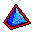
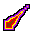
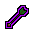

")
Prayer - The Basics
Introduction

To view what prayers are available to you in game, simply click on the Prayer icon. This can be found either at the top-right corner of the in-game menu (windowed mode) or at the bottom-right of the screen (resizable or full-screen mode). You should now have a list of all the prayers, with those currently available to you being lit up.
Prayer Effects
Listed below are all the prayer effects currently available within RuneScape and what Prayer level you will need in order to use them:
Prayer |
Prayer Level Required |
Effect |
![[image]](../../img/main/kbase/skills/prayer/swizzle_sticks/prayer1.gif) Thick Skin+ |
1 |
Increases your Defence by 5% |
![[image]](../../img/main/kbase/skills/prayer/swizzle_sticks/prayer2.gif) Burst of Strength+ |
4 |
Increases your Strength by 5% |
![[image]](../../img/main/kbase/skills/prayer/swizzle_sticks/prayer3.gif) Clarity of Thought+ |
7 |
Increases your Attack by 5% |
![[image]](../../img/main/kbase/skills/prayer/swizzle_sticks/prayer4.gif) Sharp Eye+ |
8 |
Increases your Ranged by 5% |
![[image]](../../img/main/kbase/skills/prayer/swizzle_sticks/prayer5.gif) Mystic Will+ |
9 |
Increases your Magic by 5% |
![[image]](../../img/main/kbase/skills/prayer/swizzle_sticks/prayer6.gif) Rock Skin+ |
10 |
Increases your Defence by 10% |
![[image]](../../img/main/kbase/skills/prayer/swizzle_sticks/prayer7.gif) Superhuman Strength+ |
13 |
Increases your Strength by 10% |
![[image]](../../img/main/kbase/skills/prayer/swizzle_sticks/prayer8.gif) Improved Reflexes+ |
16 |
Increases your Attack by 10% |
![[image]](../../img/main/kbase/skills/prayer/swizzle_sticks/prayer9.gif) Rapid Restore |
19 |
Doubles the speed at which stat loss is restored (not life points or prayer points) |
![[image]](../../img/main/kbase/skills/prayer/swizzle_sticks/prayer10.gif) Rapid Heal |
22 |
Doubles the restore rate for life points |
![[image]](../../img/main/kbase/skills/prayer/swizzle_sticks/prayer11.gif) Protect Item |
25 |
If this prayer is active it allows you to keep an additional item when you die. |
![[image]](../../img/main/kbase/skills/prayer/swizzle_sticks/prayer12.gif) Hawk Eye+ |
26 |
Increases your Ranged by 10% |
 Mystic Lore+ |
27 |
Increases your Magic by 10% |
Steel Skin+ |
28 |
Increases your Defence by 15% |
![[image]](../../img/main/kbase/skills/prayer/swizzle_sticks/prayer15.gif) Ultimate Strength+ |
31 |
Increases your Strength by 15% |
![[image]](../../img/main/kbase/skills/prayer/swizzle_sticks/prayer16.gif) Incredible Reflexes+ |
34 |
Increases your Attack by 15% |
![[image]](../../img/main/kbase/skills/prayer/swizzle_sticks/protect_from_summoning.gif) Protect from Summoning (m) |
35 |
100% Immunity to familiars' right-click abilities 40% Damage reduction from familiars' special moves |
 Protect from Magic* |
37 |
100% Immunity to monsters' Magic attacks 40% Damage reduction from player Magic attacks 50% Reduction in effect of player spells~ |
 Protect from Missiles* |
40 |
100% Immunity to monsters' Ranged attacks 40% Damage reduction from player Ranged attacks |
![[image]](../../img/main/kbase/skills/prayer/swizzle_sticks/prayer19.gif) Protect from Melee* |
43 |
100% Immunity from monsters' melee attacks 40% Damage reduction from player melee attacks |
![[image]](../../img/main/kbase/skills/prayer/swizzle_sticks/prayer20.gif) Eagle Eye+ |
44 |
Increases your Ranged by 15% |
![[image]](../../img/main/kbase/skills/prayer/swizzle_sticks/prayer21.gif) Mystic Might+ |
45 |
Increases your Magic by 15% |
![[image]](../../img/main/kbase/skills/prayer/swizzle_sticks/prayer22.gif) Retribution (m)* |
46 |
If this prayer is active when you die, it deals damage of up to 25% of your max Prayer to all nearby enemies. Note that this prayer will not hurt other players outside of PvP areas, and it won't hit multiple targets in non-multicombat zones |
![[image]](../../img/main/kbase/skills/prayer/swizzle_sticks/prayer23.gif) Redemption (m)* |
49 |
If this prayer is active when your health drops below 10%, but doesn’t reach 0, you will be healed for 25% of your maximum Prayer |
![[image]](../../img/main/kbase/skills/prayer/swizzle_sticks/prayer24.gif) Smite (m)* |
52 |
If this prayer is active when you are fighting another player, they will lose 1 Prayer point for every forty points of damage you do to them. This prayer drain effect isn't affected by your victim's protection prayers |
![[image]](../../img/main/kbase/skills/prayer/swizzle_sticks/arthur_chivalry.gif) Chivalry (m)+ |
60 |
Must have completed King's Ransom and the training room in Camelot. Adds +20% to your Defence, +18% to your Strength and +15% to your Attack |
![[image]](../../img/main/kbase/skills/prayer/swizzle_sticks/dungeon_renewal.gif) Rapid Renewal (m) |
65 |
Must be purchased from the reward trader of Daemonheim. Restores life points at 5 times the normal restore rate. |
![[image]](../../img/main/kbase/skills/prayer/swizzle_sticks/arthur_piety.gif) Piety (m)+ |
70 |
Must have completed King's Ransom and the training room in Camelot. Adds +25% to your Defence, +23% to your Strength and +20% to your Attack |
Augury (m) |
77 |
Must be purchased from the reward trader of Daemonheim. Boosts your magical attack by 20% and magical defence by 25%. |
(m) These prayers are for members only.
+ These prayers will not stack with better versions of themselves (e.g. no Rock Skin + Steel Skin).
* These prayers cannot be used at the same time as each other.
~ Hold time is not reduced against Ancient Magick ice spells.
Each of the prayers can be turned on or off individually, and while in use will grant your character the advantages as listed above. To activate a prayer, left-click the icon in question and it will have a light appear around it, which lets you know that the prayer is in use. To deactivate it, simply click on it again.
At any one time you may have a single protect prayer (Protect from Magic, Protect from Melee, Protect from Missiles) active, as well as one of the following options:
- Strength and Attack prayers (only one of each at a time)
- One Magic prayer
- One Ranged prayer
- Protect from Summoning
So you can only use one attack-method prayer at a time (Attack and Strength combined count as melee-style here), and only one Defence prayer.

Quick Prayers

To use this feature, right-click on the prayer status globe next to your minimap and choose 'Select quick prayers', this will change your side interface to something like that shown to the right. Here, you can choose which prayers will be turned on or off when you click the status globe. All of the usual rules about which prayers can be used simultaneously still apply.
Note that using this feature will turn off any other prayers you are using.
Getting Prayer Experience
Unlike other skills, you do not gain Prayer experience through the act of praying (i.e. using Prayer or praying at an altar). Instead, you gain experience by burying the bones of creatures you (or another) have killed.
Once you have obtained your bones, you can bury them by left-clicking on the bones in your inventory. This will automatically bury the bones under the spot you are standing on. Alternatively, you can right-click on the bones within your inventory and select the Bury Bones option.
Different monsters may sometimes drop different types of bones which will give you higher experience. It is also possible to buy a bonecrusher, which will automatically bury any bones you would have received from monster drops.
| Bone Type |
Experience Gained |
![[image]](../../img/main/kbase/items/bones/bones.gif) Bones |
4.5 |
![[image]](../../img/main/kbase/items/bones/wolfbones.gif) Wolf bones (m) |
4.5 |
![[image]](../../img/main/kbase/items/bones/burntbones.gif) Burnt bones |
4.5 |
![[image]](../../img/main/kbase/items/bones/monkeybones.gif) Monkey bones |
5 |
Bat bones (m) |
5.3 |
![[image]](../../img/main/kbase/items/bones/bigbones.gif) Big bones |
15 |
![[image]](../../img/main/kbase/items/bones/curved_bone.gif) Curved bones (m) |
15 |
![[image]](../../img/main/kbase/items/bones/long_bone.gif) Long bones (m) |
15 |
![[image]](../../img/main/kbase/items/bones/jogrebones.gif) Jogre bones (m) |
15 |
![[image]](../../img/main/kbase/items/bones/zogrebones.gif) Zogre bones (m) |
22.5 |
![[image]](../../img/main/kbase/items/bones/shaikahanbones.gif) Shaikahan bones (m) |
25 |
![[image]](../../img/main/kbase/items/bones/babydragon.gif) Baby dragon bones (m) |
30 |
![[image]](../../img/main/kbase/items/bones/wyvern_bones.gif) Wyvern bones (m) |
50 |
![[image]](../../img/main/kbase/items/bones/dragonbones.gif) Dragon bones (m) |
72 |
![[image]](../../img/main/kbase/items/bones/fayrgbones.gif) Fayrg bones (m) |
84 |
![[image]](../../img/main/kbase/items/bones/raurgbones.gif) Raurg bones (m) |
96 |
![[image]](../../img/main/kbase/items/bones/kingdag_bones.gif) Dagannoth bones (m) |
125 |
![[image]](../../img/main/kbase/items/bones/ourgbones.gif) Ourg bones (m) |
140 |
If you have started the Zogre Flesh Eaters Quest, then you will be able to use that area of the map to get more bone types, as shown in the table below:
| Bone Type |
Experience Gained |
Fayrg bones (m) |
84 |
Raurg bones (m) |
96 |
Ourg bones (m) |
140 |
Zogre bones are obtained by killing zombie and skeleton ogres, of which there is a plentiful supply within Jiggig.
The other bones can only be obtained through picking the locks, or using appropriate keys on caskets found strewn throughout the area. It will require a Thieving skill of at least 20 to successfully pick the locks on these coffins. Be warned, failure will result in your Thieving skill being temporarily drained, as the dead wreak their vengeance upon you.
Ourg bones can be gained by killing General Graador in the God Wars Dungeon, if you are feeling brave enough!
Click here to view the Prayer FAQs

More articles in
Prayer
|
|
|
Further Help
If this article does not help you, you may find the following sections of the RuneScape site helpful:
|
|